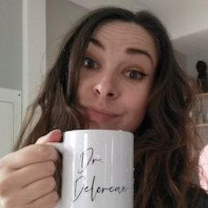
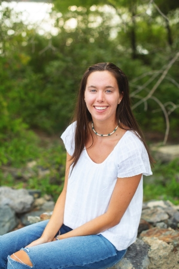
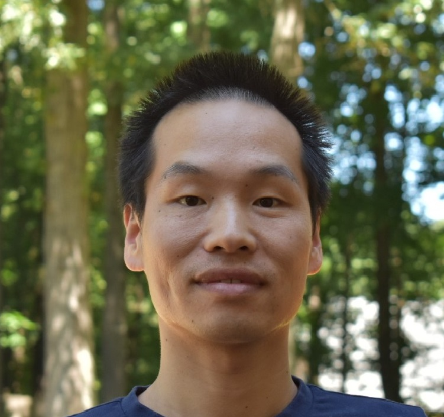

Emily Delorean
Emily was a NSF postdoctoral fellow in Amanda’s lab. In collaboration with William Rutter (USDA-ARS), they leveraged de novo genome assemblies to study the genetic basis of the root-knot nematode virulence on chili peppers and correspondingly, the genetic resistance of chili peppers against root-knot nematodes. The goal of the work was to help breed chili pepper varieties with durable genetic resistance to root-knot nematodes. Emily likes teaching, talking about science over beer or cupcakes, and kittens.

Ashley Schoonmaker
Ashley was a Bioinformatics Ph.D. student with Dr. Amanda Hulse-Kemp and Dr. Susana Milla-Lewis at North Carolina State University. Her primary area of research lied in the development of genetic tools for crop breeders and QTL analysis for resistance to diseases, which includes projects in cotton, St. Augustinegrasses and bermudagrasses. Ashley is now working with Syngenta in the Research Triangle.
Cassondra (Cassie) Newman
Cassondra was a Crop Science Ph.D. student, and was co-advised by Dr. Amanda Hulse-Kemp and Dr. Jeff Dunne. Her primary area of research was integrating genomics era tools into the North Carolina State University Virginia-Type peanut breeding program. To demonstrate the utility of genomic tools in peanut breeding, she generated high-throughput genomic information and UAV phenotype data.
Dr. Newman is currently a Scientist with Bayer Crop Science in St. Louis, MO.

Meg Partridge, B.S.
Meg worked in the Hulse-Kemp Lab during her senior year at UNC Chapel Hill, assisting in sugarcane genome analysis. After graduating in May 2023 with a Quantitative Biology degree, she accepted a job on the Bioinformatics team of the Texas Public Health Dept. in Austin, TX.

Daniel Restrepo-Montoya, PhD
Daniel was a biologist with a master’s degree in Computer Science and a Ph.D. in Genomics and Bioinformatics. A former fellow of the Fulbright program, he has knowledge and expertise in the analysis and handling of biological data through the application of mathematical and informatics tools and experience working with research groups that specialize in different biological problems.
Daniel is currently a Max Planck Tandem Group Leader in Colombia at the Universidad Nacional de Colombia.

Xingbo Wu, PhD
Xingbo is currently an Assistant Professor in Ornamental Breeding at the University of Florida.